From igniters to a 98 mm solid rocket motor
Rutgers Rocket Propulsion Lab (RRPL), Rutgers University
Propulsion team · leading role since Jan 2025 · motor design, manufacturing, static testing, data analysis
- Static-fire days
- 5Feb 2024 – Dec 2025, student-built motors only
- Motor diameters
- 38 → 54 → 98 mmeach one a new casing and nozzle
- Largest total impulse
- ≈5,380 N·sL/M class boundary, Dec 2025
- Next milestone
- First flighton a motor of our own, 2026–27
RRPL is Rutgers’ student rocketry team. Its propulsion group spent five years working towards one goal: flying a rocket on a solid motor the team designed, cast, machined and qualified itself rather than one bought off the shelf. This page follows that path stage by stage, with the photographs, test videos (with sound) and data from each one, and a line on why each stage mattered. I joined the work in January 2025 and have had a leading part in everything from that point on; the earlier stages are the groundwork our motor stands on.
Three motors on one chart
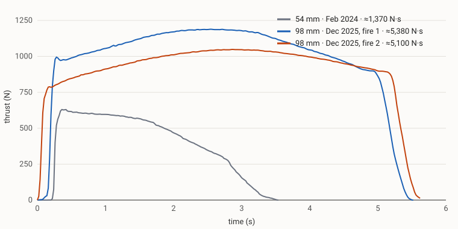
Timeline
- static fire
- build and test
- design
- competition and goal
Click any photo to enlarge it; every video plays with sound.
2021–2023
Groundwork: measuring, lighting and casting a motor before building one.
-
Mar – Sep 2022build and test
Test electronics, igniters and casting tooling
A 3D-printed black box for the data-acquisition electronics, the first igniter and ejection-charge hardware, and printed tooling for casting propellant grains.
Why it matters. Before anyone could design a motor, the team needed a way to measure one, light one and cast one.
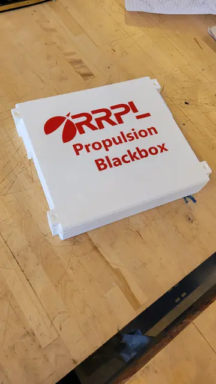
Mar 2022 · Data-acquisition black box 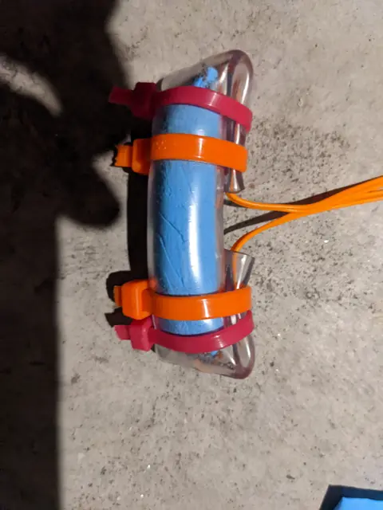
Jun 2022 · Early ejection-charge hardware 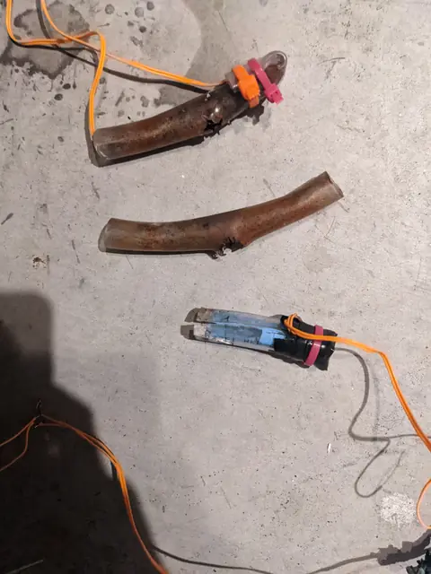
Jun 2022 · Igniter prototypes 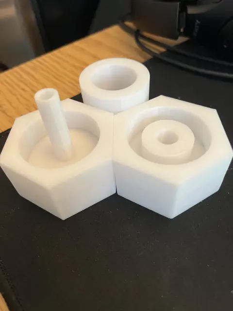
Sep 2022 · 3D-printed casting tooling -
Jan 2023build and test
An ejection-charge stand and a printed nozzle
An adjustable stand for ground-testing ejection charges, and a 3D-printed prototype nozzle.
Why it matters. Ground tests replace guesswork on launch day, and printing a nozzle first is a cheap check of the geometry before any graphite is cut.
Time-lapse: printing a prototype nozzle 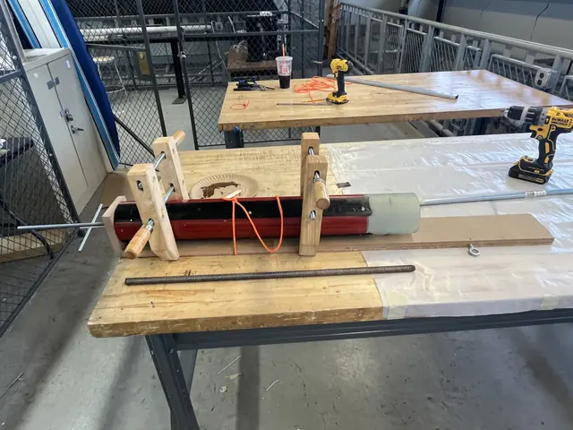
Adjustable ejection-charge test stand -
Aug 2023build and test
First machined motor hardware, and a decision
Aluminium closures and a tube for a reusable casing came off the lathe, and the team set its direction: “The next step for us is to achieve SRAD status” — student researched and designed motors, not commercial reloads.
Why it matters. This is where the programme turned from buying motors to building them.
A member’s launch, shared the same week 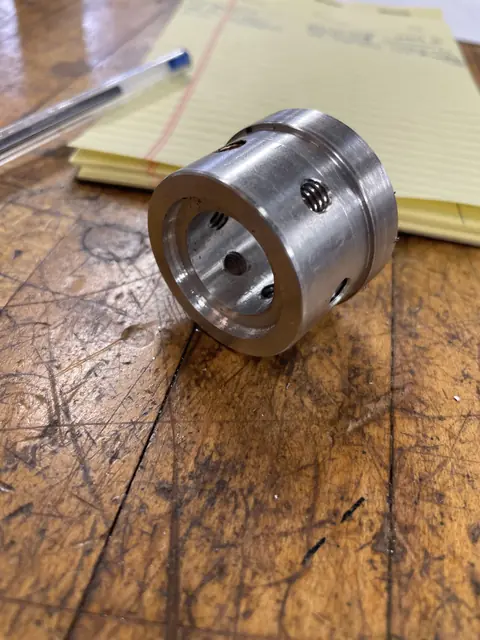
Closure with radial ports 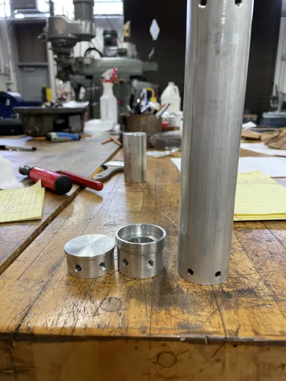
Tube and first closures 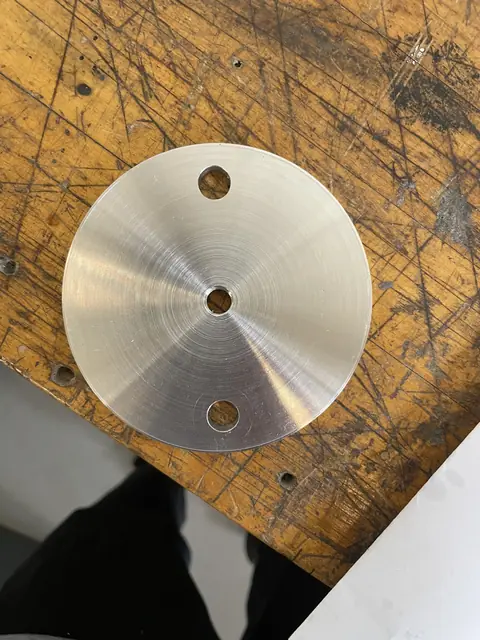
Machined closure disc 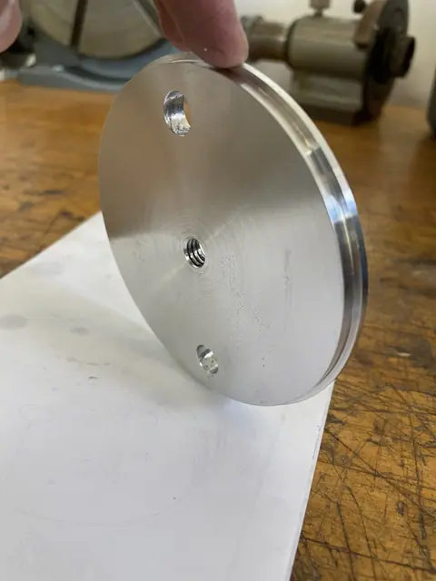
Disc with a tapped centre hole -
Oct 2023 – Jan 2024design
A thrust stand
The first stand was modelled in CAD and built around a load-cell fixture.
Why it matters. Without measured thrust there is no total impulse, no specific impulse and no way to check a simulation.
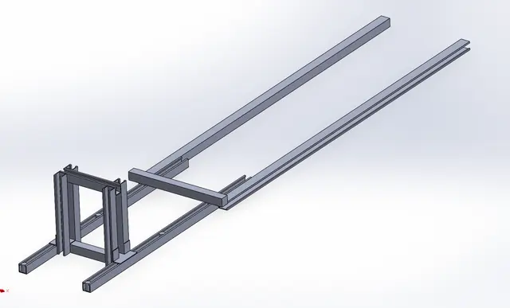
Oct 2023 · Stand CAD 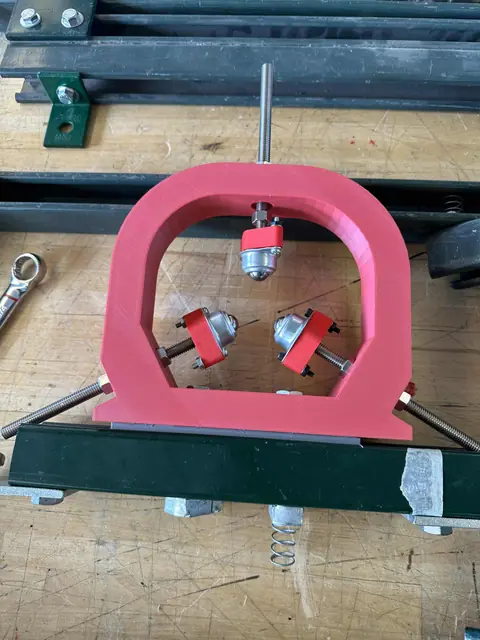
Jan 2024 · Load fixture 2024
The first student-built motors fire, the team flies at Spaceport, and the 98 mm motor is born.
-
3 Feb 2024static fire
Characterisation motors
Three small motors were fired on the stand to measure how fast the propellant burns at different pressures.
Why it matters. The burn-rate law is the input every later motor simulation depends on.
Test 1 Test 2 Test 3 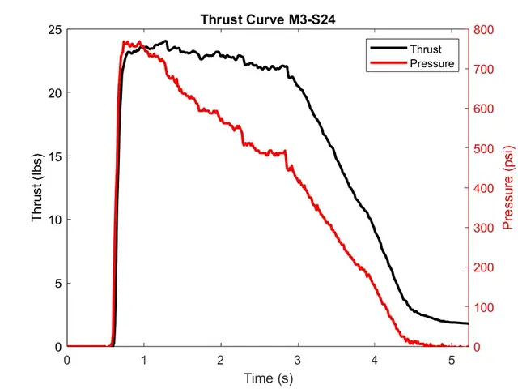
Thrust and pressure, test 3 (team plot) -
Feb 2024build and test
The first graphite nozzle and the 54 mm casing
A graphite nozzle was turned on the lathe and fitted to the first full student-built casing.
Why it matters. Graphite survives the throat temperature that aluminium cannot; this casing became the first SRAD motor.
A new graphite nozzle off the lathe 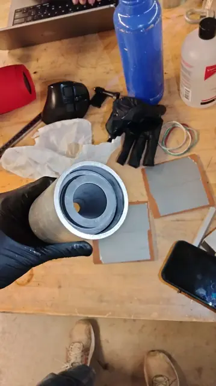
Fitting the graphite nozzle 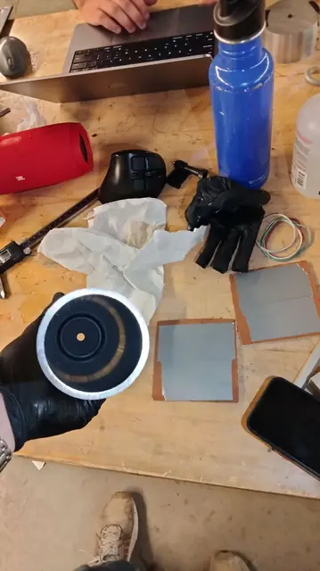
Throat view 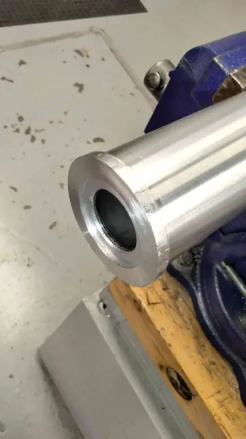
54 mm casing in the vise 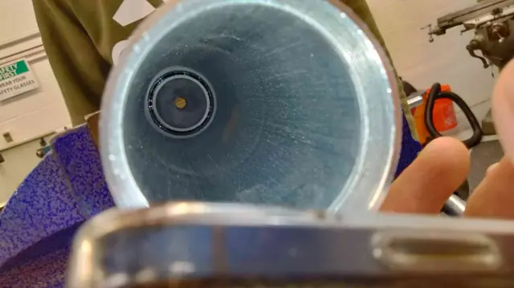
Down the bore 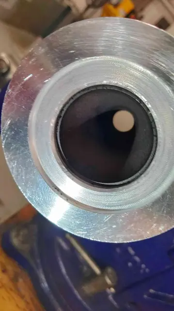
Nozzle seated, the day before the fire -
24 Feb 2024static fire
First student-built motors: 38 mm and 54 mm
- 1,369 N·s 54 mm total impulse
- 1,100 openMotor prediction
- 213 s specific impulse
Both motors fired on the same day at a launch field. The 54 mm motor beat its simulation by a quarter and started at about twice the predicted thrust, hinting that the propellant burned faster than modelled. Afterwards the graphite nozzle was found cracked, and the pressure transducer had recorded nothing.
Why it matters. The first proof the team could build a working motor, and the first data showing where the model was wrong.
54 mm: violet plume, shock diamonds 38 mm, from the flight line 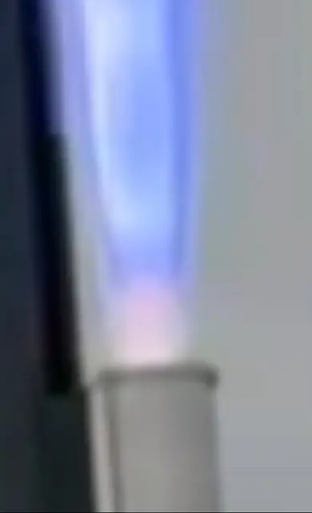
Plume still the team used to judge nozzle expansion -
Early Mar 2024static fire
Second 54 mm fire, and what went wrong
The throat had been drilled to 0.455 in instead of 0.375 in and the liner burned. Rather than requalify the casing, the team later decided to make a new one.
Why it matters. Two failure modes found on the ground instead of in flight.
Second 54 mm fire 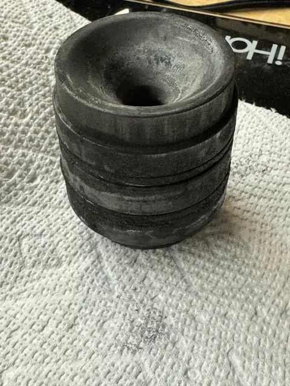
Nozzle after the second fire 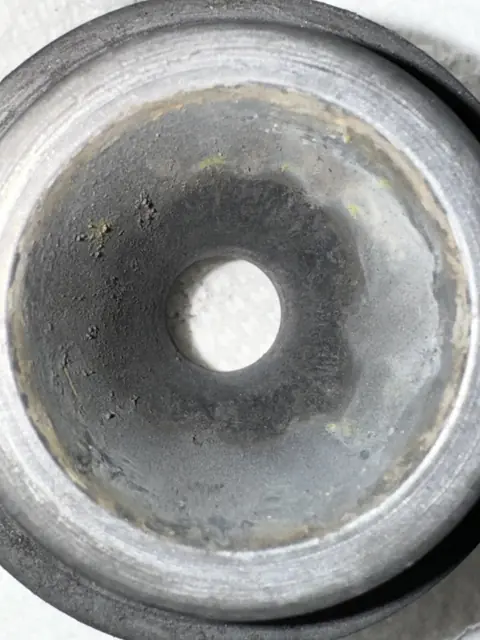
Nozzle face 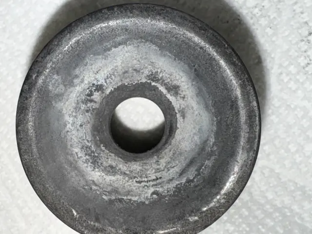
Fired throat, 0.455 in -
Mar – Apr 2024design
A bigger stand and the 98 mm nozzle
Thrust Stand 2.0 was sized by finite-element analysis for 2,500 lbf. The 98 mm nozzle got the architecture it still uses: a phenolic carrier that takes the load and insulates the closure, and a graphite insert at the throat.
Why it matters. The stand was proven for the 98 mm class before it was built, and the nozzle layout chosen here survived both December 2025 fires.
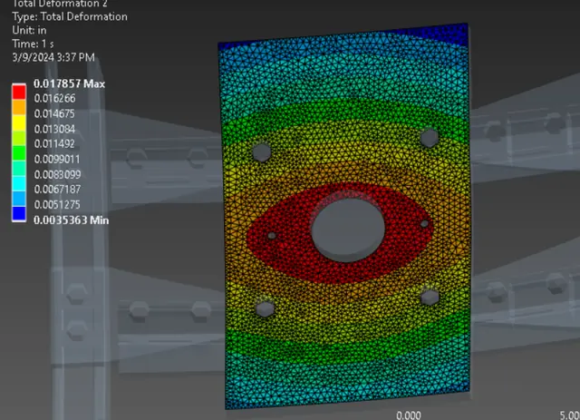
Stand plate FEA 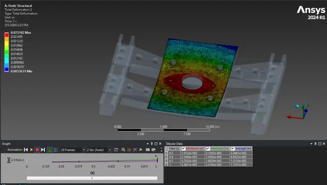
Stand assembly FEA 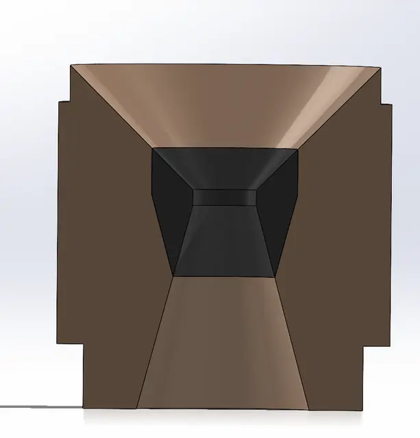
Phenolic carrier and graphite insert 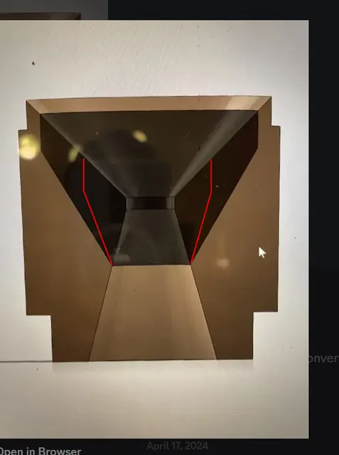
Nozzle section, second iteration -
Jun 2024competition
Spaceport America Cup: Knightmare
- 30,000 ft category (COTS)
- 2 stages, 6″ and 4″
- M4500 / M1939 booster / sustainer
RRPL’s two-stage rocket flew at the world’s largest intercollegiate rocket engineering competition on commercial motors. The booster flew and the whole vehicle was recovered, but the sustainer never lit: the copper tape carrying current to its igniter tore during assembly or ascent.
Why it matters. That single igniter failure is why the next motor got head-end ignition.
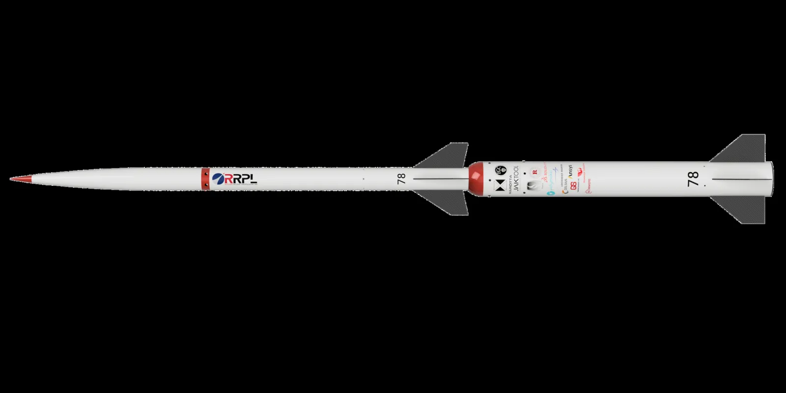
Knightmare, from the team’s technical report 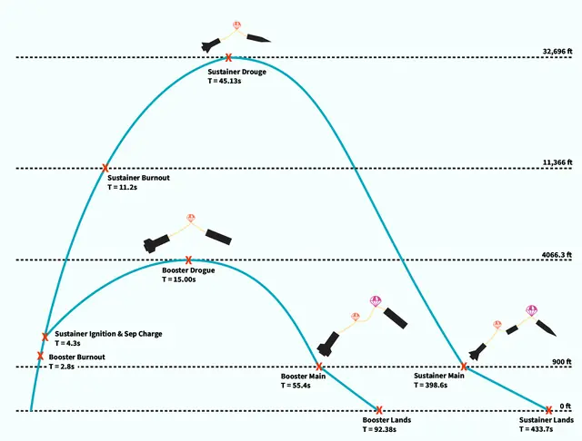
Planned flight profile, sustainer apogee near 32,700 ft 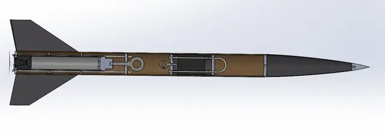
Mar 2024 · Rocket model: motor mount, centering rings, recovery bay, fins -
Jul – Oct 2024build and test
Machining the 98 mm motor
Tube stock, closures, threads and a knurled aft closure; the graphite nozzle took nine and a half hours on the lathe.
Why it matters. Every part of this motor was turned in-house, so tolerances and threads became the team’s problem, and its skill.
9 Sep · 98 mm manufacturing begins 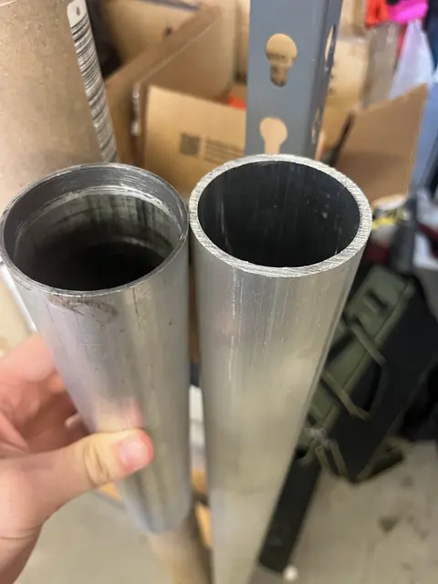
Jul · Tube stock 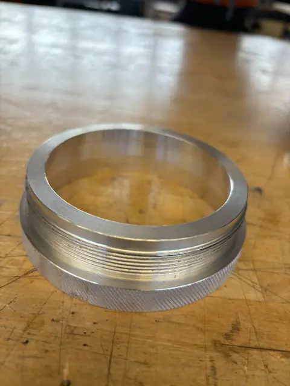
Sep · Aft closure, knurled 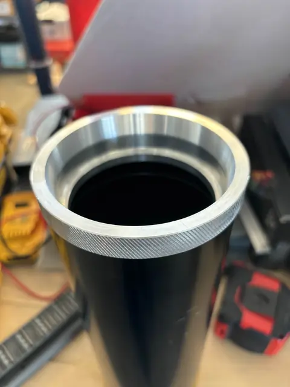
Sep · Aft closure on the casing 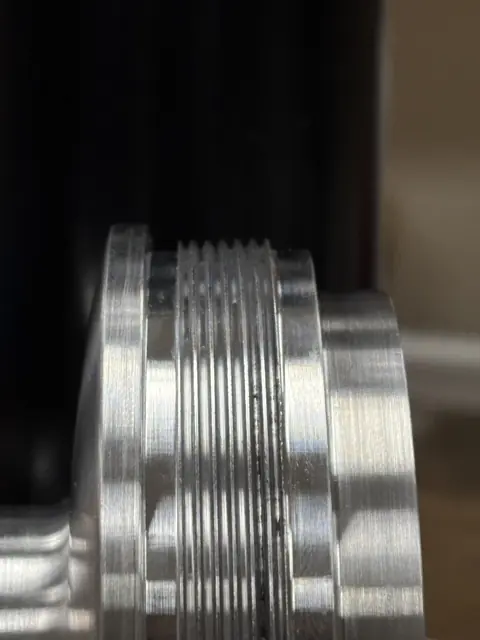
Oct · Closure threads 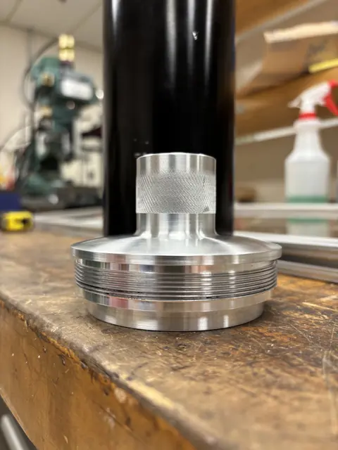
Oct · Forward closure 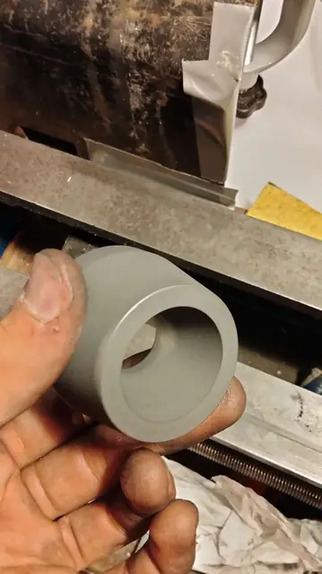
Oct · Graphite throat finished 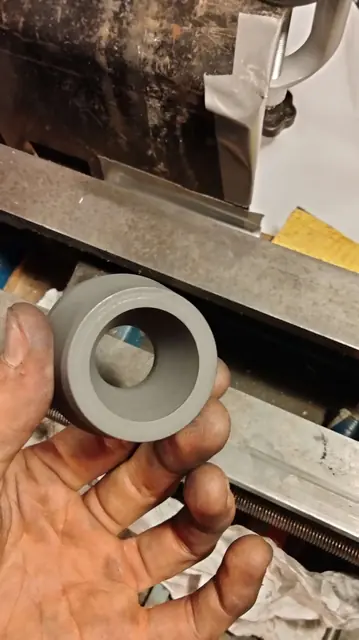
Throat insert, side 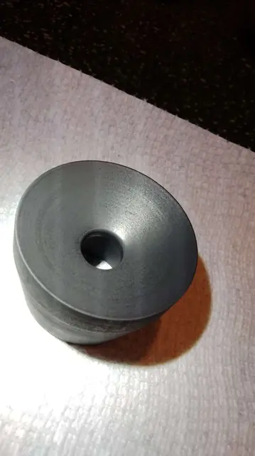
Graphite nozzle 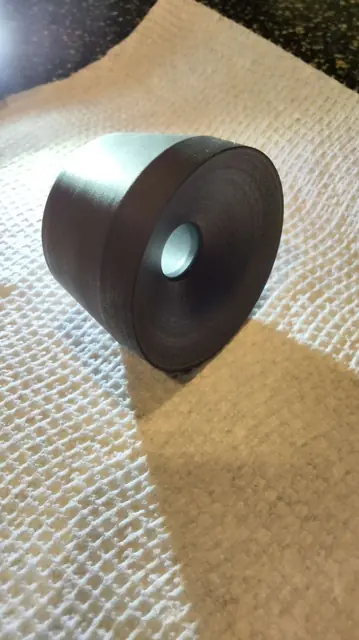
After a 9.5-hour lathe session 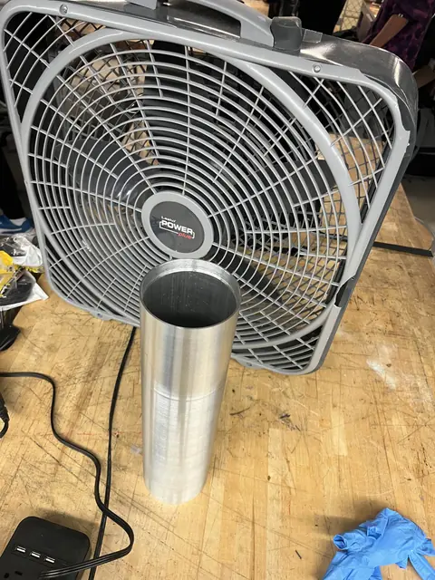
98 mm casing tube 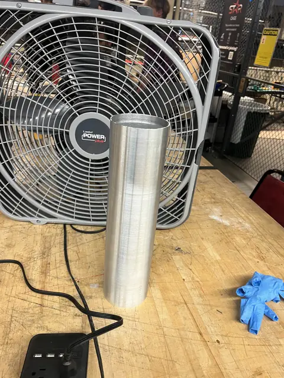
Casing tube, bore -
19 Oct 2024static fire
The first 98 mm fire
- ≈5,170 N·s team’s reduction
- 260 lbf peak thrust
- 670 psi peak pressure
Eight months after the first 54 mm fire, the 98 mm motor ran on the new stand at a launch weekend. A short motor nicknamed “Stubby” fired the same day.
Why it matters. Roughly four times the impulse of the 54 mm motor: the jump from a hobby-scale motor to an M-class one.
First 98 mm fire “Stubby” 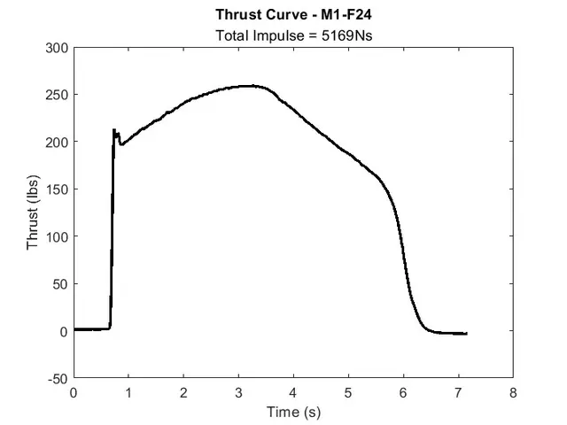
The team’s thrust curve, 5,169 N·s -
Nov – Dec 2024design
Head-end ignition and a hydrostatic rig
An igniter fed through a threaded bolt in the forward closure, so the wire never runs up the nozzle; the e-match is dipped in pyrogen and sealed with an O-ring. A hydrostatic set-up with a calibrated transducer was built to proof-test hardware.
Why it matters. The direct answer to the Spaceport failure, and the rig that later proved the CT-1 casing.
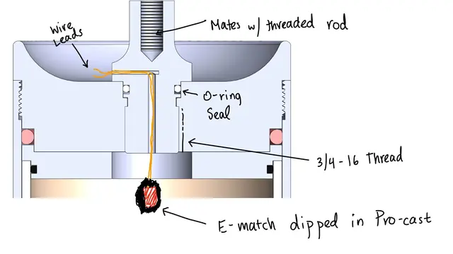
HEI concept sketch 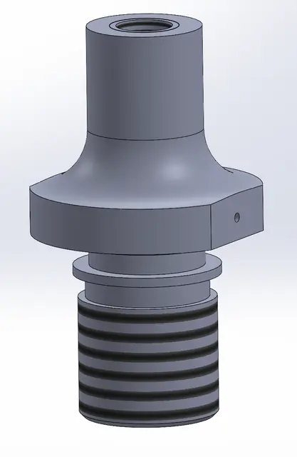
HEI bolt CAD 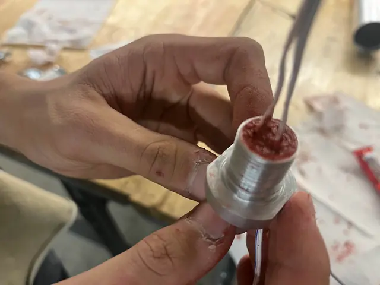
Packing pyrogen 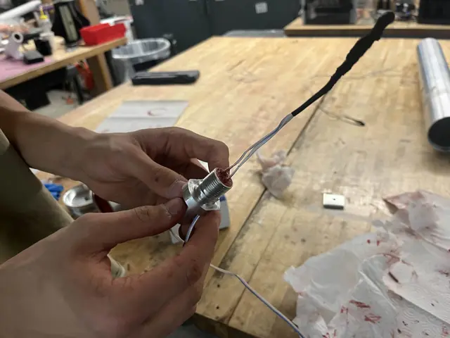
Building the igniter 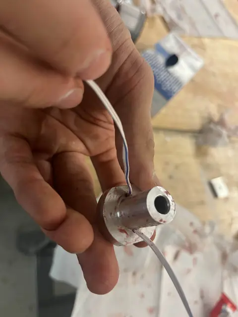
Finished housing 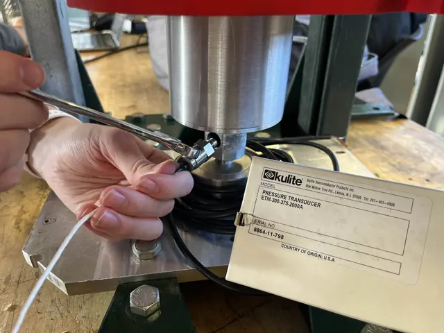
Hydrostatic rig 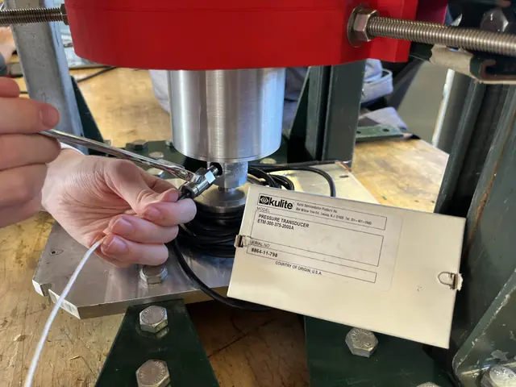
Transducer and calibration sheet 2025
New casing, new nozzle, and two static fires in one day.
From here on I had a leading role in the work.-
Jan – Apr 2025build and test
CT-1 casing: threads and a 1,200 psi proof
The new body tube (6061-T6, 3.858 in outside, 3.63 in bore, 3.715-16 threads at both ends) was released in January. We measured bore and thread depth against the drawing, moved to single-point threading, and hydrostatically tested the casing to 1,200 psi with no leaks. In parallel the throat was sized in openMotor: a Kn of 273 gave 0.41 in, 310 gave 0.385 in.
Why it matters. The casing is the pressure vessel; a proof test well above operating pressure is what makes it safe to fire.
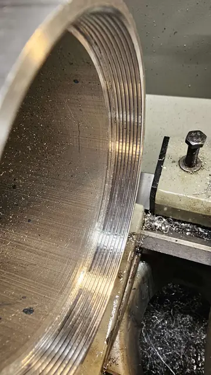
Apr · Closure threads, single-point cut 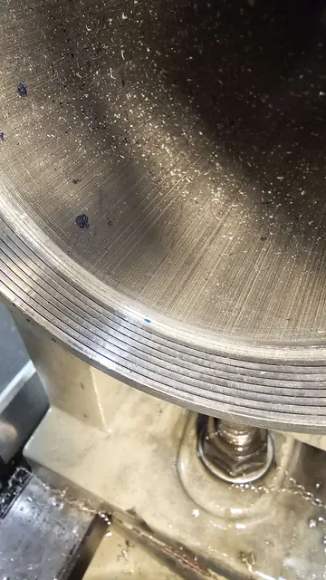
Thread flanks and bore openMotor throat sizing -
Feb 2025build and test
Launch preparation: igniters for student and commercial motors
For a February launch weekend the team mixed propellant, assembled booster and sustainer motors, and made igniters for both the student-built motor and commercial L2500 and K1999 reloads.
Why it matters. Launch-day reliability comes down to small parts; an igniter is what cost the sustainer at Spaceport.
-
Sep – Nov 2025build and test
A second casing and stand upgrades
A two-grain casing tube was machined for the next fires, and the stand got new strut-channel fittings.
Why it matters. A second casing is what made two fires in one day possible.
-
Oct 2025design
Reading the char, redesigning the nozzle
Spent phenolic nozzles were cut in half to see how deep the char went. The redesigned carrier came out with safety factors of 17.3 in bearing, 12.2 for the carrier and 2.8 for the graphite insert, bonded with a 0.010–0.015 in layer of RTV.
Why it matters. Measuring the old part told us where material was needed and where it was wasted.
-
3 Dec 2025build and test
Launch weekend preparation: commercial reloads
Alongside our own motor, the team assembled AeroTech RMS-98 reloadable motors for the flight side of the weekend: case, forward seal disc, liner and nozzle, and tested the stand for centering. The static fire moved from 6 to 13 December because of shipping and mixing delays.
Why it matters. Every RRPL flight still uses commercial motors, and this hardware is the reference layout our own closures, seal disc and liner follow.
-
13 Dec 2025static fire
Two fires in one day, with our own propellant and casing
- ≈5,380 / 5,100 N·s total impulse
- ≈1,190 / 1,050 N peak thrust
- ≈880–950 psi peak pressure, fire 1
- ≈5 s burn
Both fires at the Maryland–Delaware Rocketry Association range, on a load cell and pressure transducers, each with two 6 in grains, sat right on the L/M class boundary (5,120 N·s). The thrust curves are in the chart near the top of the page.
Why it matters. The most powerful student-built motors in the team’s history to that date, fired back to back.
Test 1 Test 2 -
16 Dec 2025build and test
Teardown: the nozzle survived
The phenolic and the graphite both held, the seals had not leaked, and the char was thin enough that we estimate the nozzle can be reused about five times. Next: some RTV was squeezed out and cooked, and the tapered contact needs a smaller area for the larger exit of a four-grain motor.
Why it matters. A reusable nozzle turns each fire into a cheaper, faster iteration.
2026
From our own data to a flight motor.
-
Feb 2026design
A burn-rate law from our own fire data
The December pressure trace was turned into a burn-rate law (a·Pn) with Nakka’s method, done independently in MATLAB and in Excel; both gave an exponent of about 0.67.
Why it matters. Until now, motors were designed with constants from a reference propellant; this closes the loop with ours.
-
Spring 2026design
Competition grains and a 75 mm sustainer
We machined the competition grains and started a 75 mm sustainer motor with head-end ignition. A planned spring static fire was called off.
Why it matters. A two-stage rocket needs a second motor; this is its start.
-
2026 – 27 seasongoal
Jersey Devil: the first flight on our own motor
Finish the 98 mm motor and integrate it into a rocket, alongside a new booster propellant. Every RRPL flight so far has used commercial motors. For the team’s openMotor training I modelled two commercial phenolic nozzles from their drawings (0.344 and 0.734 in throats): fixed 3.27 in grains with a 1.125 in core, varying only throat and grain count to match an M1939 under 2,000 psi.
Why it matters. Flight is the test that everything on this page has been building towards.


Photographs, videos and team plots by RRPL members; the rocket image and flight profile are from the team’s 2024 Spaceport America Cup technical report. The three-motor chart is mine, from the raw test-stand logs.